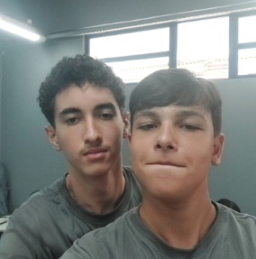
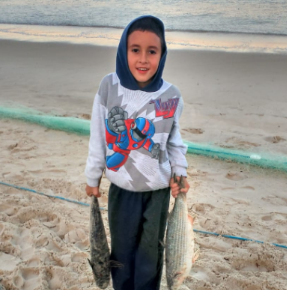

Olá!
Sou Kallany Santos Senabio, estudante do Ensino Médio Técnico em Desenvolvimento de Sistemas pelo SESI SENAI.
Desde o início da minha trajetória no curso, experimentei um grande amadurecimento. Aprendi a enfrentar desafios de forma mais estratégica, a colaborar com empatia em grupos e a buscar soluções criativas para problemas do cotidiano. A formação técnica tem me proporcionado um conhecimento valioso sobre programação, lógica e tecnologias emergentes, além de me estimular a pensar de maneira crítica sobre o impacto da tecnologia no mundo ao meu redor.
Minhas expectativas para este ano são de continuar a aprofundar meus conhecimentos na área da tecnologia, explorando novas linguagens de programação, metodologias ágeis e novas possibilidades de inovação. No campo profissional, tenho como objetivo desenvolver projetos que integrem propósito e impacto social, utilizando a tecnologia como ferramenta para promover mudanças reais.
Atenciosamente,
Kallany Santos Senabio
Meu cachorro

Eu e meu amigo vitão

Eu criança na pesca